DeepSeek V4.1 Flash 技术解读：KV 缓存压缩如何让 Flash 逼退 Pro
来源：微信公众号 归档日期：2026-09-12 抓取状态：成功 原文字符：11130｜配图：15 张
摘要速览
- 报告标题《DeepSeek-V4.1-Flash: Pushing the Limits of KV Cache Compression》，几乎所有设计都指向同一目标：把 KV 缓存压下去。
- 全局 KV 缓存降至每 token 890 字节，约为 V4-Flash 的 1/4、DeepSeek-V1（389,120 字节）的 1/437；持久化 KV 缓存压到 V4-Flash 的约 1/8。
- 模型为 552B 主干 + 196B Engram 参数的多模态 MoE，原生支持 100 万 token 上下文，45T token 预训练，prefill 每 token 激活 8B、decode 激活 16B。
- 效果：上下文从 4K 拉到 1M（放大 256 倍），单 token decode FLOPs 只增加 1/4，用 552B 逼退 1.6T 的 V4 Pro。
- 评测：Artificial Analysis 给出 40 分指数，超过 V4 Pro；AutomationBench-AA 以 69% 并列第一（与 GPT-6 Astra 持平，略高于 Grok 4.6 的 67%）；每任务成本约 0.27 美元。
核心内容
- 瓶颈迁移：从 V3.2 的 DSA 到 V4 的 CSA，稀疏注意力已把长序列计算成本削得足够低。长程 agent 负载的痛点是 input-heavy——每次工具调用都产生新的 prefill，上下文只增不减。于是瓶颈从"算"转向"存"和"搬"，拆成三块：HBM 容量限制并发请求的全局 KV；SSD/主机内存容量限制前缀缓存留存与命中率；IO 与互联带宽限制缓存迁移加载速度。
- CED（Causal Encoder-Decoder）：语言主干 40 层切成两半——前 20 层因果编码器、后 20 层解码器，这正是不对称的"输入激活 8B、输出激活 16B"来源；解码器各层 KV 通过 Reindex/Reuse 等模式跨层复用，但每层保留自己的全局 Q 与 SWA KV。一把砍掉约一半 prefill 计算。
- 精度：V4 已对索引器 Q/K 做 FP4 量化感知训练，V4.1-Flash 把 FP4 推进到 main KV 缓存，格式为 E2M1 配每 16 通道一个 E4M3 缩放因子（接近 NVFP4 但省掉二级全局缩放）。
- 部署（SWA Bounded Replay）：SWA 依赖逐层累积，精确重建 L 层 SWA KV 需回放 L × n_win 个 token，代价过高，于是接受近似——只回放最近 n_win（=128）个 token。收益显著：V4 部署中 SWA KV 曾占持久化缓存近一半容量，且与长留存策略不匹配；V4.1-Flash 把 SWA KV 整个移出持久化缓存，改放进每台机器 10% 主机 DRAM 组成的分布式内存池（TTL 几分钟，靠高周转服务并发会话），全局 KV 留在 SSD 保证至少 72 小时生命周期。全局 KV 命中而 SWA KV 未命中时用 bounded replay 重算兜底，把灾难性缓存未命中变成廉价优雅降级。
- reasoning effort 设计：后训练把 1–100 的标量 effort 显式写进系统提示，同 effort 采样构成子组做组内奖励中心化，长度惩罚系数随 effort 指数衰减（每增加一个特征尺度乘 1/e），让同一份权重在成本-质量曲线上滑动；API 的 max/high/low 对应 b=100/75/50。effort 从 25 提到 100，八个推理密集型基准平均 Pass@1 从 67.1% 升到 76.3%，DeepSWE v1.1 从 66.0% 到 74.2%，Terminal-Bench 2.1 从 82.4% 到 90.6%，代价约 2.5 倍输出 token；60–80 档已能用不到一半 token 预算拿到接近满档准确率，80→100 会让 agent 轨迹再长 1.6–1.8 倍只换来边际提升。
- 开源配套：deepseek-recipe（统一 API 请求/响应与 Conversation 格式的 Rust 库 + Python bindings）、DeepJIT（面向 CUDA 与昇腾 NPU 的轻量 header-only C++20 JIT 运行时）、DeepSelect（DSA TopK 内核与采样器高性能实现，较 torch.topk 加速 2–20 倍）。另已开始灰度语音交互。
可执行启发
- 部署长上下文 agent 时，先算清瓶颈在"算"还是"存/搬"；上下文超过数十万 token 后，成本大头通常是 KV 的存储与迁移而非 FLOPs。
- 分层缓存策略可借鉴：长生命周期、有长尾复用价值的全局 KV 留持久化存储（SSD），短窗口、会话级的 SWA KV 放高周转内存池并允许近似重算兜底。
- 调 API 时按任务难度选 reasoning effort：默认用中高档（相当于 b=60–80）可省约一半 token 预算且准确率接近满档，max 档只留给最难任务。
归属：[[02-输入/按主题/工具与技术/_index|工具与技术]]
我的想法
（待补充）
原文沉淀
目录
编辑｜Panda
前两天，DeepSeek V4.1 Flash 正式上线，又快又强，引发了广泛关注和测试热潮。
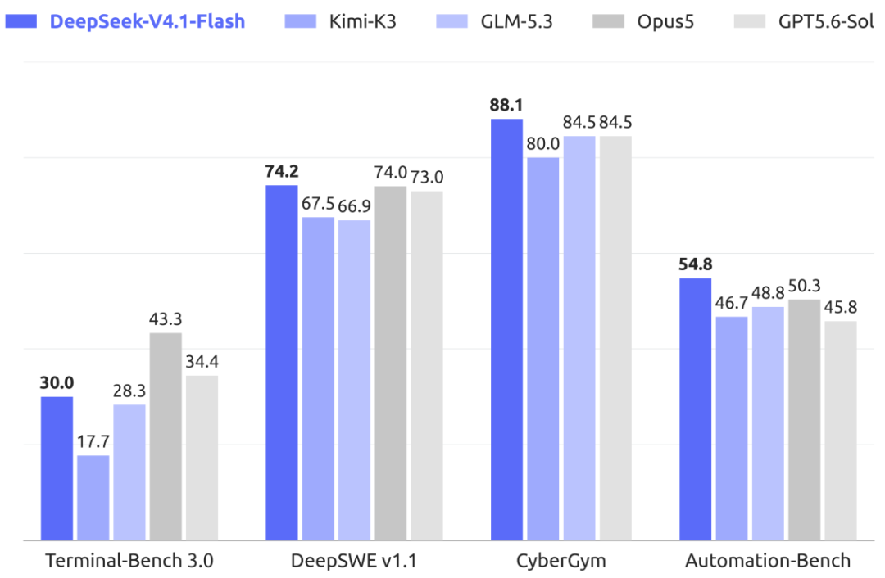
比如著名测试机构 Artificial Analysis 对 V4.1 Flash 进行了非常充分的测试后，给出了 40 分的指数评分，超过了 DeepSeek 家参数量大得多的 V4 Pro。
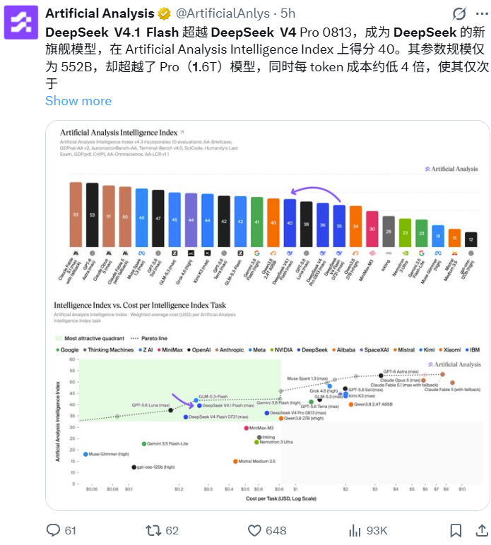
当然，这并不意外，毕竟 DeepSeek 自己也得出了这一结论，并表示会让 V4 Pro 下线并将相关请求直接路由的 V4.1 Flash。顺带一提，DeepSeek 已经连续两次修改决定，先是延迟下线 V4 Pro：
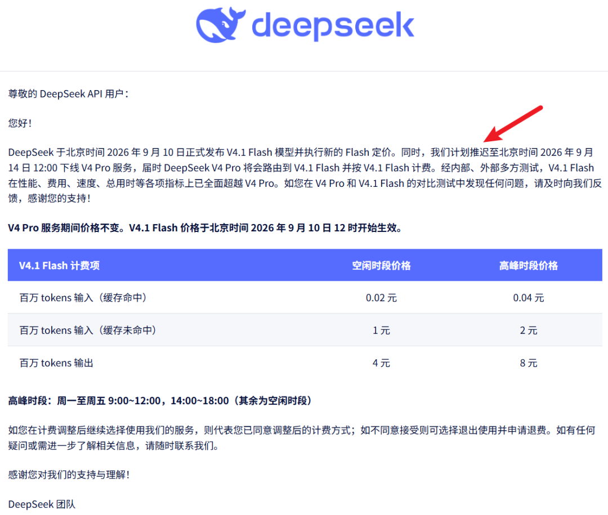
然后又放弃下线 V4 Pro 并继续提供 API 调用服务：
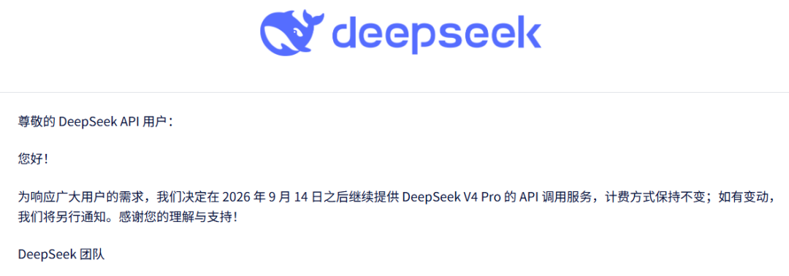
此外，Artificial Analysis 的系统评测中还有另一些看点：
- DeepSeek V4.1 Flash 在智能体能力和长上下文推理方面进步明显。
- DeepSeek V4.1 Flash 以 69% 在 AutomationBench-AA 上排名第一，与 GPT-6 Astra（69%）持平，略高于 Grok 4.6（67%）。
- DeepSeek V4.1 Flash 是其测得的冗长度最高的模型之一，每个 Intelligence Index 任务 89k Tokens。
- 尽管如此冗长，DeepSeek V4.1 Flash 每个 Intelligence Index 任务仍仅花费 0.27 美元。这主要得益于其低定价。
Sebastian Raschka 甚至认为 DeepSeek V4.1 Flash 创新之大，应该叫它 DeepSeek V5。
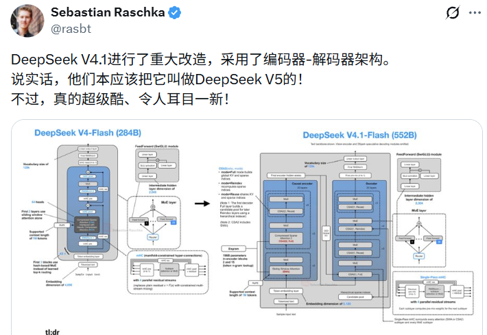
那么，DeepSeek V4.1 Flash 究竟是如何做到的呢？如何以 552B 参数的小肥鱼超越了 Pro 的 1.6T 参数大肥鱼？下面我们就基于其官方技术报告来进行一番解读。
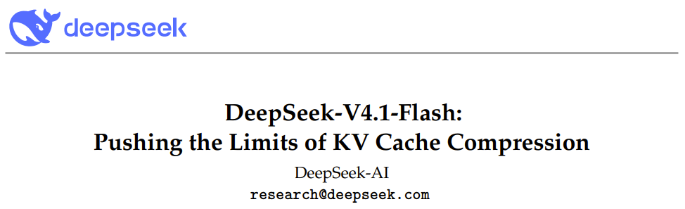
报告地址：https://huggingface.co/deepseek-ai/DeepSeek-V4.1-Flash/blob/main/DeepSeek_V41_Tech_Report.pdf
这是一篇围绕 KV 缓存写的报告
先看技术报告的标题：「DeepSeek-V4.1-Flash: Pushing the Limits of KV Cache Compression」。推进 KV 缓存压缩之极限。翻完架构章节，我们发现，这不是一个修辞，几乎每一处设计都能回溯到同一个目标：把 KV 缓存压下去。
先看几个数字。V4.1-Flash 的全局 KV 缓存（始终常驻 HBM 的那部分）被压到每 token 890 字节，约为 V4-Flash 的 1/4；如果拉到 DeepSeek-V1 的 389,120 字节来看，这是 437 倍的差距。持久化 KV 缓存（落在 SSD 或主机内存里、用于前缀复用的那部分）则被压到 V4-Flash 的约 1/8。
模型本身是 552B 主干参数外加 196B Engram 参数的多模态 MoE，原生支持 100 万 token 上下文，在 45T token 的多模态语料上预训练，prefill 阶段每 token 只激活 8B 参数，decode 阶段激活 16B。
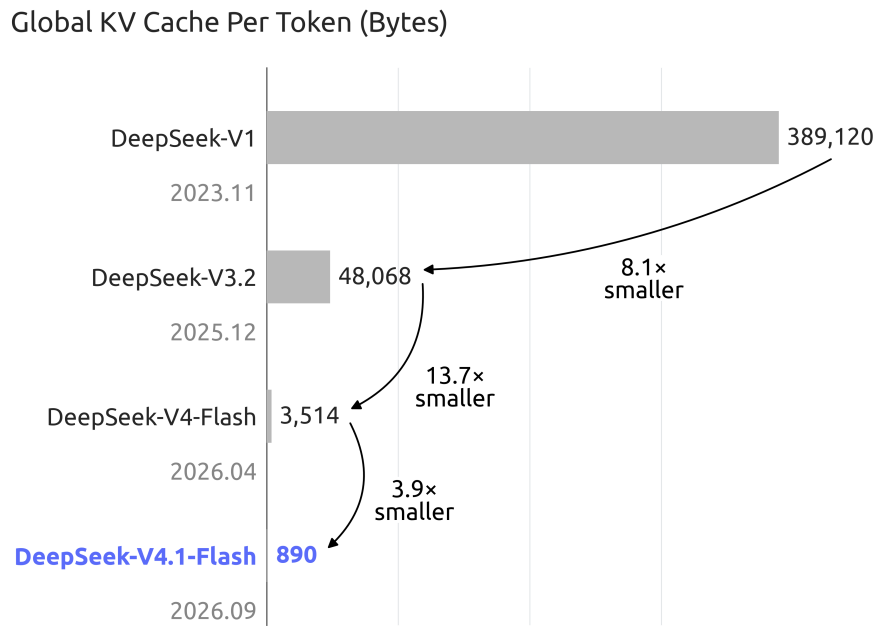
DeepSeek 历代模型每 token 全局 KV 缓存大小对比
这套数字组合起来，才是「552B 干掉 1.6T」的真正含义：比较的核心是同样一次 agent 调用里，模型要占多少显存、要从 SSD 搬多少数据、要重算多少次 prefill。
稀疏注意力之后，贵的地方是存和搬
要理解 DeepSeek 为什么把全部火力对准 KV 缓存，得先看清楚瓶颈的变化。
从 V3.2 的 DSA 到 V4 的 CSA，稀疏注意力已经把长序列的计算成本削得足够低。但长程 agent 的工作负载有个特点：输入重（input-heavy）。
一个跑几小时的编码 agent，每次工具调用都会产生一次新的 prefill 请求，上下文只增不减，真正需要生成的 token 反而是少数。
于是，当「算」不再是瓶颈之后，「存」和「搬」就顶了上来。
报告把这个新瓶颈拆成三块：
- HBM 容量限制了运行时能同时装下多少并发请求的全局 KV；
- SSD 和主机内存容量限制了前缀缓存能存多久、命中率有多高；
- IO 与互联带宽则限制了缓存迁移和加载的速度。
三个问题合起来，决定了一个 agent 服务的吞吐上限和单位成本。V4 时代 DeepSeek 已经把 CSA 与 HCA 混合起来做序列维度的压缩，V4.1-Flash 则选择在架构、精度、部署三个层次上同时下手。
CED：把一半的 prefill 计算直接砍掉
V4.1-Flash 的语言主干是 40 层，但被切成了两半：前 20 层是因果编码器（Causal Encoder），后 20 层是解码器。这个结构叫 Causal Encoder-Decoder，简称 CED。这也是 DeepSeek 官方发布页上「输入激活 8B、输出激活 16B」这条不对称设计的来源。
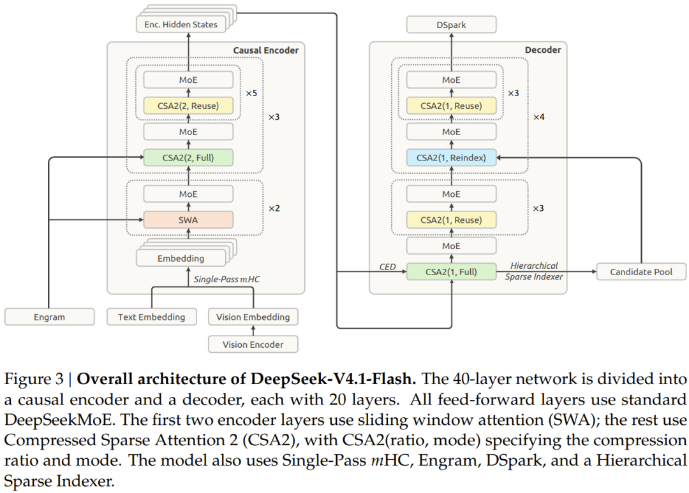
有趣的是，Arena 的 Peter Gostev 还让 Astra 阅读了 DeepSeek v4.1 Flash 的论文，用 3D 将其架构与原始 Transformer 架构进行了非常直观的对比。他还将其分享了出来，你可以放大并排查看每一个元素：
https://transformer-architecture.petergostev.chatgpt.site/
已关注
**
关注
重播 分享 ** 赞
观看更多
**
**
**
**
机器之心
**
0/0
00:00/00:39
进度条，百分之0
**
播放
00:00
/
00:39
00:39
倍速
全屏
** 倍速播放中
0.5倍0.75倍1.0倍1.5倍2.0倍
超清流畅
您的浏览器不支持 video 标签
**
继续观看
DeepSeek V4.1 Flash用了哪些黑科技？竟让Flash（差点）逼退Pro
转载
,
DeepSeek V4.1 Flash用了哪些黑科技？竟让Flash（差点）逼退Pro
**
机器之心
****已同步到看一看写下你的评论
**
视频详情
关键在于解码器那 20 层的全局 KV 是怎么来的？
常规 Transformer 里，每层的 K、V 都从该层自己的隐藏状态算出来，所以处理一段提示词必须把 40 层全部跑完。
CED 不这么做：解码器各层的 KV 条目直接由第 20 层（也就是编码器最后一层）的隐藏状态用各自的投影矩阵映射得到。换句话说，prefill 阶段只需要跑前 20 层，上半部分的全局 KV 缓存就已经以极低的代价拿到手了。序列长度远大于窗口时，prefill 的复杂度从 O(NL) 降到约 O(NL/2)，接近对半砍。
这个思路继承自微软的 YoCo（You Only Cache Once），但 CED 做了结构上的加厚：YoCo 是让上半部分直接共享下半部分产生的同一份 KV 缓存，CED 则是为每一层配置独立的投影权重，在保住「只算一半」的前提下，扩大了 KV 的有效容量和生成深度。
代价也有，出现在滑动窗口注意力上。SWA 仍然是逐层计算的，每层的局部 K、V 都来自本层隐藏状态，这样才能维持局部信息的计算深度。可这意味着 prefill 时解码器仍需额外处理 n_win × L/2 个 token 来补齐 SWA 状态，对于多轮短提示的场景反而成了新的开销。
DeepSeek 的处理方式是「近似」：既然已有研究表明 SWA 的实际有效感受野远小于理论上的 n_win × L/2，那就只回放提示词最后的 n_win 个 token。这就是后面要讲的 Decoder SWA Bounded Replay。
CSA2：三个压缩维度，第一次被同时吃满
CED 管计算，CSA2（Compressed Sparse Attention 2）管的是存储。
报告把 KV 缓存的压缩空间归纳成三个互相相乘的维度：条目大小（GQA 减少 KV 头数、MLA 让各头共享一个小 latent）、序列维度（每 m 个 token 压成一条，V4 的 CSA 和 HCA 属于这一类）、以及层维度（让部分层复用其他层的缓存和选择结果）。
报告中还介绍了三项之前的成果：
- IndexCache 跨层复用 Top-K 索引，省的是索引器的算力而不是缓存；
- YOIO 把稀疏路由算一次全网共享，但全网共享会伤性能；
- HySparse 让稀疏层复用稠密层的 KV 缓存，可它仍然保留了完整注意力层。
三者都没有覆盖全部三个维度，而 CSA2 想要的是同时吃满。
它的做法是给每个 CSA2 层静态分配三种模式之一。
- Full 模式自己算 main KV 和索引器 Q，从 main KV 投影出索引器 K，跑完整的索引流程产出新鲜的 Top-K 索引。
- Reindex 模式复用前面某层的 main KV 和索引器 K，但用自己的索引器 Q 重新打分、选出属于自己的 Top-K——缓存共享了，选择还是自己的。
- Reuse 模式最省，main KV 和 Top-K 索引全部沿用，直接做稀疏注意力，连索引器 Q 都不算。
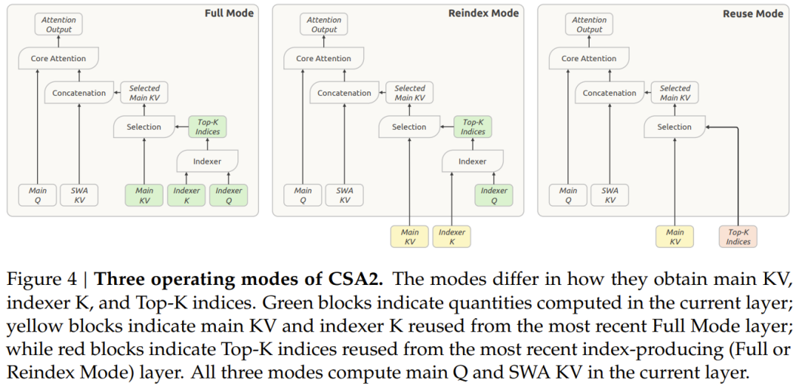
三种模式的共同点是，每层仍然保留自己的全局 Q 和 SWA KV，所以层与层之间的表达能力并没有被抹平。具体配置参见原报告。
FP4 与 Bounded Replay
架构之外，还有两刀。
第一刀在精度上。V4 已经对索引器的 Q、K 做了 FP4 量化感知训练，V4.1-Flash 把 FP4 推进到了 main KV 缓存。格式上选的是 E2M1 配每 16 通道一个 E4M3 缩放因子，接近 NVFP4 但省掉了它的二级全局缩放。报告也硬核地论证了这个做法，感兴趣的读者可自行查阅。
第二刀在部署上，就是前面提到的 SWA Bounded Replay。由于 SWA 的依赖会逐层累积，精确重建 L 层的 SWA KV 需要回放 L × n_win 个 token，V4 的技术报告里提出过「Zero SWA Caching」的思路，但这个代价在生产部署中被证明过高。V4.1-Flash 干脆接受近似：只回放最近的 n_win 个 token（配置里 n_win = 128），并把 SWA 截断到回放段内。
这个「接受近似」换来的收益很明显。在 V4 的部署中，SWA KV 占了持久化缓存近一半的容量，而它的访问模式跟持久化缓存的长留存策略根本不匹配——全局 KV 有长尾复用价值，SWA KV 却只在一个活跃会话内的分钟级窗口里有用，会话一结束就是死数据。
于是 V4.1-Flash 把 SWA KV 整个移出持久化缓存，改放进由每台机器 10% 主机 DRAM 组成的分布式内存池，TTL 只有几分钟，靠高周转服务绝大多数并发会话；全局 KV 继续留在 SSD 上，保证至少 72 小时的生命周期。
偶尔出现全局 KV 命中而 SWA KV 未命中的请求，就用 bounded replay 重算 n_win 个 token 兜底。报告称这把一次灾难性的缓存未命中变成了一次廉价的优雅降级，持久化 KV 缓存也因此降到 V4-Flash 的约 1/8。
所有这些加在一起的效果：上下文从 4K 拉到 1M、放大 256 倍，V4.1-Flash 的单 token decode FLOPs 只增加了 1/4。
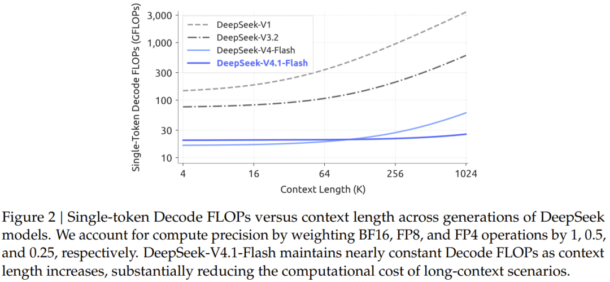
各代 DeepSeek 模型单 token decode FLOPs 随上下文长度的变化
Single-Pass mHC、Engram 与 DSpark
熟悉 DeepSeek 这一年论文节奏的读者，会在架构章节里看到不少老面孔。
mHC（流形约束超连接）来自今年元旦发布的那篇论文，解决的是超大规模训练的稳定性问题。
V4.1-Flash 把它升级成了 Single-Pass mHC。
原始实现里，输入混合系数 A 必须等隐藏维度上的规约完成才能拿到，导致残差更新、系数预测、输入混合三个 kernel 只能串行，激活访存量是理论下界的两倍。
新版本的做法是把混合系数错开一个 block——每个 block 消费上一个 block 产出的混合系数，依赖关系就此消失，三步可以融进一个叫 Mega-mHC 的 kernel 里，激活访存从 (4n+4)d 降到 (2n+2)d，正好减半。报告说这个错位带来的性能损失可以忽略。
Engram 则是今年 1 月 DeepSeek 与北京大学合作提出的条件记忆模块，思路是用 N-gram 哈希实现 O(1) 复杂度的静态知识检索，把「记忆」从昂贵的 GPU 显存卸载到廉价的 DRAM，让 MoE 专心做组合推理。
V4.1-Flash 里它第一次进了正式版模型：196B 参数平均分给两个模块，放在第 1 层和第 14 层，采用 {2, 3, 4} 阶 N-gram、8 个哈希头、每阶总嵌入维度 2048，每个头索引约 1600 万条目，表大小取互不相同的质数。嵌入表和投影都用 FP8，推理时靠确定性寻址从主机内存后台 RDMA 预取，第一个模块的预取直接和第一个 Transformer block 的计算重叠。相比原始 Engram 设计，这里去掉了那个短因果卷积，理由是它的收益不足以抵消推理栈的复杂度。
投机解码模块 DSpark 由三个 Transformer block 组成，滑动窗口 128 token，一次前向并行给出五个草稿位置的 base logits，再用一个轻量的 Markov 头建模草稿 token 之间的依赖，另有一个置信度头预测逐位置的接受概率，由调度器结合引擎吞吐曲线动态决定每个请求的验证长度。跟 V3 里全程与主干联合训练的 MTP 不同，DSpark 是在预训练之后单独训练的，后训练阶段跟着主干一起走但不回传梯度，好处是它能持续对齐不断演化的策略，同时加速线上服务和 RL 的 rollout 生成。
优化器层面也有两处调整：Q、K 权重用按头切分的 head-wise Muon，以处理注意力头之间的异质性；Engram 嵌入表、token 嵌入和预测头则用动量更新配 Sinkhorn 平衡替代 Adam，只需一个动量缓冲，省下了大量优化器状态显存。
这些优化效果明显：占绝大多数的 Reuse 模式层，prefill 时只需执行 15 个 kernel，decode 时只需 11 个。
后训练：「没有算法创新」
DeepSeek 在后训练章节坦率地表示：这一版没有引入新的后训练算法，流程就是标准的 SFT 加 RL 加 on-policy 蒸馏，没有超出成熟实践的改动。所有的改动都在数据管线上，这里就不多展开了，详见原论文。
一个有意思的点是，后训练引入了一个对使用者直接可见的设计：reasoning effort。
训练时把一个 1 到 100 的标量 effort 显式写进系统提示，同一 effort 下的多个采样构成一个子组，组内做奖励中心化，而长度惩罚系数随 effort 指数衰减：effort 每增加一个特征尺度，惩罚系数乘以 1/e。这样一来，同一份权重就能在成本-质量曲线上滑动。DeepSeek API 暴露的 max、high、low 三档，对应的正是 b=100、75、50。
这也顺带解释了开头 Artificial Analysis 那条「最冗长模型之一」的观察：它测的是 max 档，而 max 档在设计上就是这条曲线最右端的点。
报告给出的数据是，effort 从 25 提到 100，八个推理密集型基准的平均 Pass@1 从 67.1% 升到 76.3%，DeepSWE v1.1 从 66.0% 到 74.2%，Terminal-Bench 2.1 从 82.4% 到 90.6%，代价是约 2.5 倍的输出 token。
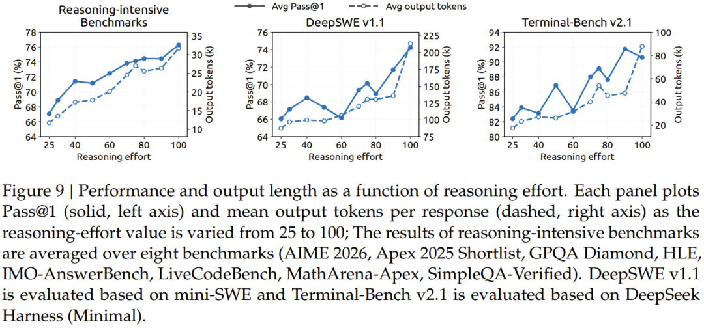
性能与输出长度随 reasoning effort 的变化
但收益是前置的——60 到 80 这一档已经能用不到一半的 token 预算拿到接近满档的准确率，而从 80 走到 100 会让 agent 轨迹再长 1.6 到 1.8 倍，换来的只是边际提升。报告的建议是把 max 留给最难的任务。
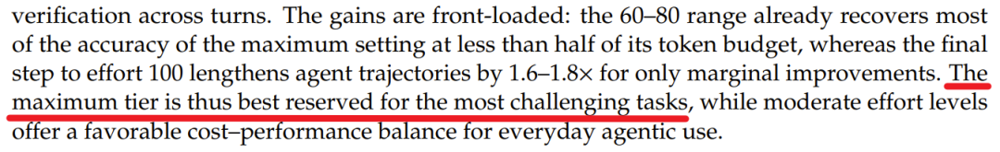
结语
把这份报告读完，会发现它最值得注意的是三个层次被拧在同一个方向上：架构层用 CED 砍掉一半 prefill、用 CSA2 把跨层复用做到三个维度全覆盖，精度层把 main KV 压到 FP4，部署层则用 bounded replay 把 SWA KV 整个赶出持久化缓存。
任何单独一项都只能带来百分之几十的改善，叠在一起才效果显著。
顺带一提，DeepSeek 还开源了一些新的代码仓库，方便更容易地部署 V4.1 Flash 以及后续的开源模型：
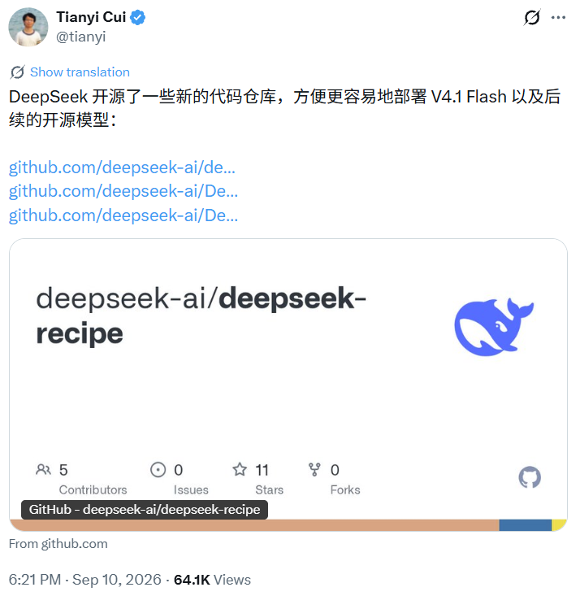
- deepseek-recipe：是一组 Rust 库和 Python bindings，可将不同格式的 API 请求统一转换为 Conversation 格式，将其编码为 DeepSeek 模型的提示，并将模型输出转换为相应格式的响应。使用这些组件将推理后端连接到支持多种格式的 API 服务。
https://github.com/deepseek-ai/deepseek-recipe
- DeepJIT：一个轻量级、仅头文件的 C++20 JIT 运行时，面向 NVIDIA CUDA GPU 和华为昇腾 NPU。它为 C++/Python 扩展作者提供了一个共享接口，用于在运行时编译内核源代码、缓存生成的二进制文件、将其加载到设备上，并使用后端特定的选项启动它们。
https://github.com/deepseek-ai/DeepJIT
- DeepSelect：是 DeepSeek 稀疏注意力（DSA）（用于 DeepSeek V3.2、DeepSeek V4 和 DeepSeek V4.1 模型）中所用 TopK 内核以及采样器的高性能实现。与原生 torch.topk 相比，它实现了 2 ~ 20 倍的加速。
https://github.com/deepseek-ai/DeepSelect
再顺带一提，DeepSeek 已经开始灰度语音交互了：
已关注
**
关注
重播 分享 ** 赞
观看更多
**
**
**
**
机器之心
**
0/0
00:00/00:17
进度条，百分之0
**
播放
00:00
/
00:17
00:17
倍速
全屏
** 倍速播放中
0.5倍0.75倍1.0倍1.5倍2.0倍
超清流畅
您的浏览器不支持 video 标签
**
继续观看
DeepSeek V4.1 Flash用了哪些黑科技？竟让Flash（差点）逼退Pro
转载
,
DeepSeek V4.1 Flash用了哪些黑科技？竟让Flash（差点）逼退Pro
**
机器之心
****已同步到看一看写下你的评论
**
视频详情
© THE END
转载请联系本公众号获得授权
投稿或寻求报道：liyazhou@jiqizhixin.com
归属：[[02-输入/按主题/工具与技术/_index|工具与技术]]